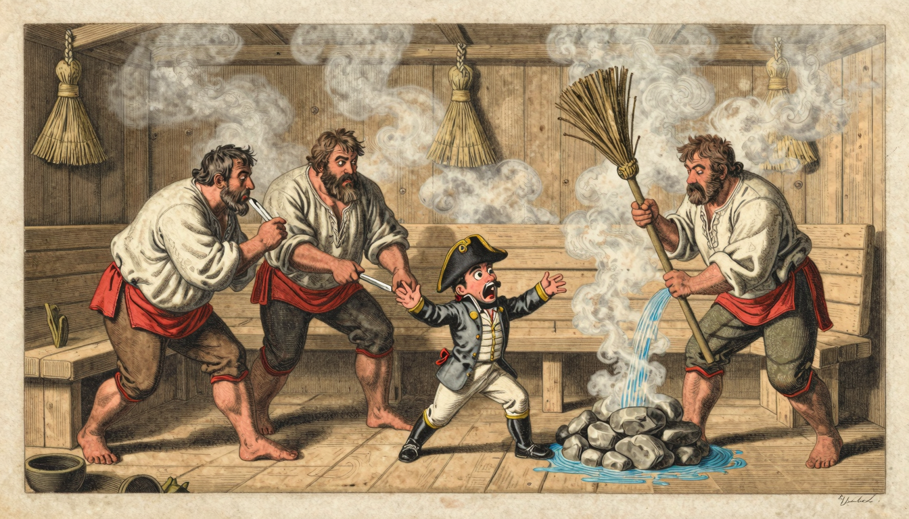

Масштаб
Наполеон меньше фигур, которые проводят над ним банную процедуру. Центр ещё не даёт власти.

Три человека за секунду лишили императора власти. Покажи, каким приёмом это сделано.


Не ищи «правильный» ответ. Зафиксируй реакцию до того, как музей раскроет подпись и приёмы художника.
Сначала вынеси вердикт по немой сцене. Затем верни три улики — масштаб, действие и реплики — и проверь, выдержит ли твой ответ.
Лаборатория взгляда
Карта власти в одной сцене
Современная образовательная реконструкцияСначала смотри только на положение, цвет и масштаб фигур. Подсказки появятся отдельно после твоего выбора.
Выбери по первому впечатлению. Ошибки нет: позже будет важна причина.
После масштаба, действий и реплик выбери итоговый вердикт.
Поворот: известное имя и центральное положение могли назначить Наполеона главным. Но уменьшенный масштаб, направленные на него действия и реплики превращают его в объект чужого приговора.
Карикатура не просто «делает врага маленьким»: она распределяет физический контроль между всеми элементами сцены.
Вывод: масштаб важен, но власть в листе создаёт связка размера, действия и текста. Учебная схема не заменяет исторический оригинал.
Предметная опора: Иван Теребенев, «Наполеон в Русской бане», 1812–1813. Карточка Государственного Русского музея. Изображение музея в схему не копировалось; атмосферный фон создан ИИ для образовательной реконструкции.
Наполеон меньше фигур, которые проводят над ним банную процедуру. Центр ещё не даёт власти.
Бритва, веник и направления рук показывают: воздействие совершают над Наполеоном, а не по его приказу.
Развёрнутый текст превращает физическое действие в публичный сатирический приговор.
В 1812 году Наполеон командовал Великой армией. На русском листе 1813 года он сидит в бане, а над ним — бритва и веник. Смех здесь не слабость, а приём: он возвращает зрителю чувство контроля над тем, кто ещё недавно внушал страх.
Иван Теребенев в 1812–1813 годах рисовал листы о войне, когда её исход ещё не был окончательно решён. «Наполеон в Русской бане» уменьшает императора и помещает его в бытовую процедуру: его парят и бреют. Факт — автор, техника и дата; позиция художника — масштаб, действие и реплики; вывод музея — наблюдение, как эти средства вместе распределяют власть. Один только малый размер ничего не объясняет: приговор складывается из связки размера, жеста и текста.
1812–1813 годы, раскрашенный офорт, И. И. Теребенев.
Масштаб, бритва, веник и реплики отдают власть русским персонажам.
Отделяем увиденное от приёма автора и музейного прочтения.
Листай ряд слева направо. Шесть листов одной серии 1812–1813 годов: император в русских сюжетах всякий раз беспомощен и смешон.
Теребенев превратил азбуку в обвинительный акт: каждая буква — отдельная карикатура на императора и его армию. Листай ряд — от титульного листа до буквы «Я». 33 листов ниже — исторические оригиналы в публичном достоянии.


После интерактива здесь появится твой путь — от автоматической реакции к осознанному чтению композиции.
Итог: 0/100 баллов. Заверши расследование и проверь себя.
Дата — номер музейного выпуска, а не годовщина события. Первые два выпуска открыты; остальные страницы появятся по очереди.
Здесь разделены сам исторический предмет, музейная карточка и цифровой файл, показанный на странице. Шесть листов Ивана Теребенева — исторические оригиналы в публичном достоянии; банная сцена собрана как учебная реконструкция и помечена отдельно.
| Экспонат | Атрибуция предмета | Держатель и номер | Источник файла на странице | Правовой статус файла |
|---|---|---|---|---|
| «Наполеон продаёт с молотка похищенные им антики» | И. И. Теребенев, 1813. Раскрашенный офорт. | Wikimedia Commons, Category:Ivan_Terebenev | Файл на странице: media/napoleon-antiki-auction.jpg. | Public Domain (Commons). |
| «Угощение Наполеону в России» | И. И. Теребенев, 1813, издание 1881 года. | Государственный исторический музей; файл на Wikimedia Commons | Файл на странице: media/napoleon-ugoschenie-gim.jpg. | Public Domain. |
| «Вороний суп» | И. И. Теребенев, XIX век. | Wikimedia Commons, Category:Ivan_Terebenev | Файл на странице: media/napoleon-voroniy-sup.png. | Public Domain (Commons). |
| «Нос, привезённый Наполеоном с собой из России в Париж» | И. И. Теребенев, 1813, издание 1881 года. | Государственный исторический музей; файл на Wikimedia Commons | Файл на странице: media/napoleon-nos-paris.jpg. | Public Domain. |
| «Наполеон и Мюнхгаузен» | И. И. Теребенев, 1813. | Wikimedia Commons, Category:Ivan_Terebenev | Файл на странице: media/napoleon-myunhgauzen.jpg. | Public Domain (Commons). |
| «Русский Сцевола» | И. И. Теребенев, 1813. | Wikimedia Commons, Category:Ivan_Terebenev | Файл на странице: media/napoleon-russkiy-stsevola.png. | Public Domain (Commons). |
Маркировка музея: шесть листов выше — исторические оригиналы, публичное достояние. Банная сцена на обложке — образовательная реконструкция: свободного файла листа ГРМ (Гр.-313) в открытом доступе нет, фон создан ИИ, фигуры нарисованы кодом, и пометка стоит рядом с визуалом.
Проверяем, как силуэт, поза и одна доминирующая черта сохраняют узнаваемость героя.
Следующий выпуск готовитсяВернись в город-музей и выбери следующую историю русской цивилизации.